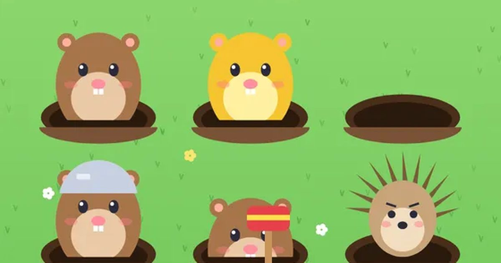

두더지 팡팡
Mole Bonk
반사신경 · 60초무료설치 없음폰 · PC
▶ 지금 바로 하기로그인 없이 브라우저에서 바로 시작돼요
어떤 게임인가요?
구멍에서 쏙쏙 튀어나오는 두더지를 뿅망치로 팡! 60초 동안 최대한 많이 잡으세요. 황금 두더지는 큰 점수, 헬멧 두더지는 두 번, 고슴도치는 절대 때리면 안 돼요.
목표 · 60초 동안 튀어나오는 두더지를 최대한 많이 잡아 최고 점수를 노리세요.
이렇게도 찾아요
두더지 잡기두더지 게임반응속도 게임whack a molemole gamereaction game
#두더지잡기 #두더지게임 #반응속도
게임 방법
- 구멍에서 튀어나온 두더지를 누르면 뿅망치로 잡아요. 기본 10점.
- 연속으로 잡으면 콤보가 쌓이고 점수가 최대 2배까지 올라요. 놓치거나 헛치면 콤보가 끊겨요.
- 콤보 15마다 6초 동안 피버 타임 — 점수 2배, 두더지가 더 자주 나와요.
- 20초가 지나면 구멍이 늘고, 40초가 지나면 더 많아져요.
등장하는 것들
- 두더지 · 10점
- 황금 두더지 · 50점 · 금방 숨어요
- 헬멧 두더지 · 두 번 때려야 해요
- 시계 두더지 · 시간 +5초
- 고슴도치 · 때리면 -30점 · 콤보 끊김
공략 팁
- 고슴도치는 그냥 두면 저절로 들어가요. 참는 것도 실력!
- 황금 두더지는 금방 숨으니 보이면 먼저 잡으세요.
- 콤보를 길게 이어 피버를 자주 켜는 게 고득점의 비결이에요.
이런 게임도 있어요
 돌팔매 대결턴제 · 1P/2P
돌팔매 대결턴제 · 1P/2P 단짝 줄넘기협동 · 혼자 두 손 / 둘이서
단짝 줄넘기협동 · 혼자 두 손 / 둘이서 색감 테스트관찰 · 측정 · 1분
색감 테스트관찰 · 측정 · 1분 공기놀이전통놀이 · 타이밍
공기놀이전통놀이 · 타이밍 무당벌레 미로미로 · 추격
무당벌레 미로미로 · 추격 무당벌레 꽃밭피하기 · 기울이기
무당벌레 꽃밭피하기 · 기울이기